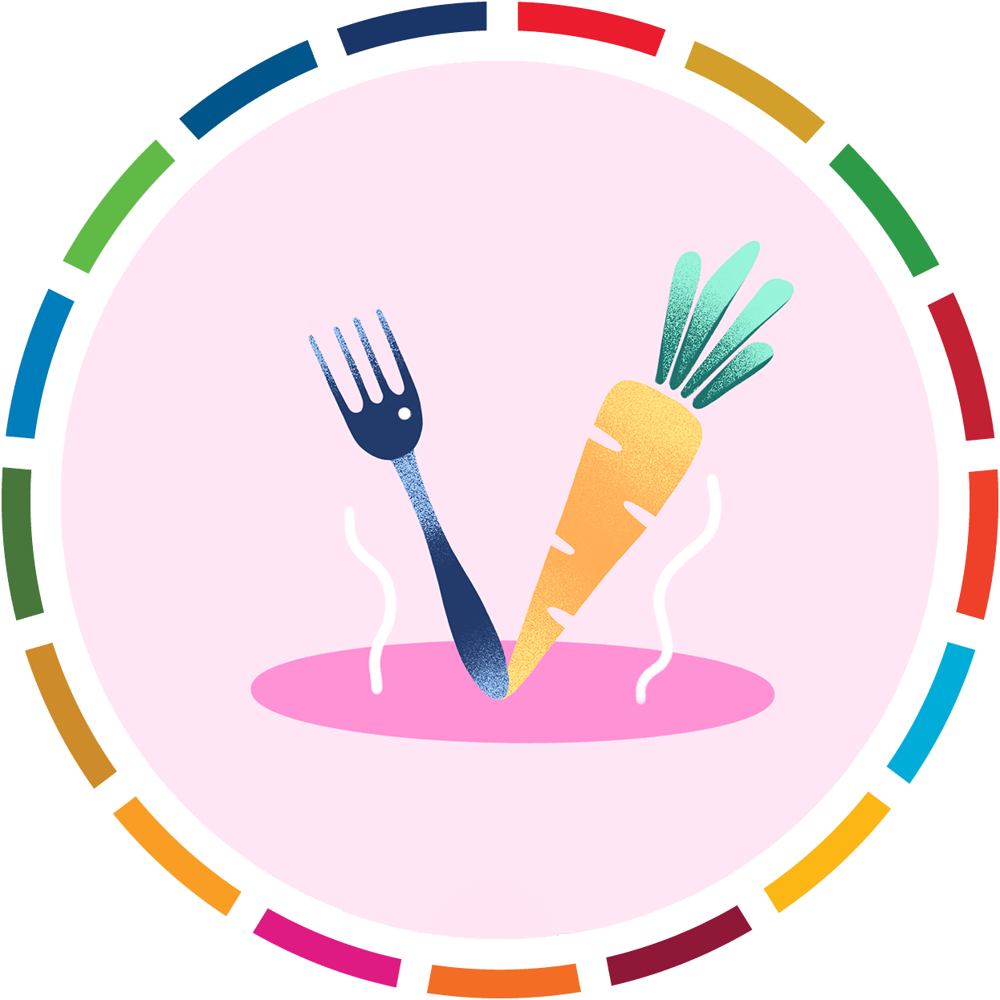
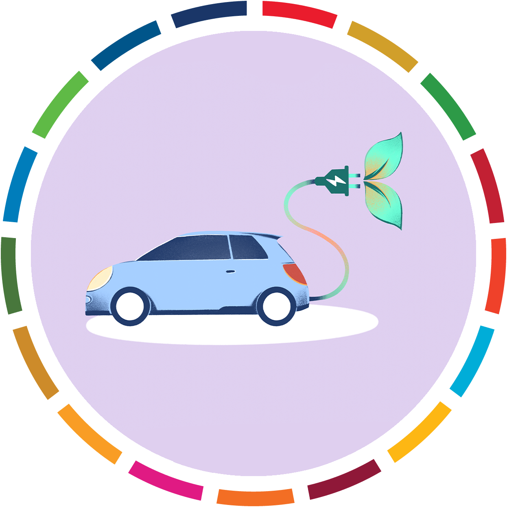

The un capmain for invidual action
To preserve a livable climate, greenhouse-gas emissions must be reduced by half by 2030 and to net zero by 2050. Bold, fast, and wide-ranging action needs to be taken by governments and businesses. But the transition to a low-carbon world also requires the participation of citizens – especially in advanced economies.
ActNow is the United Nations campaign for individual action on climate change and sustainability.
Every one of us can help limit global warming and taje care of our planet. By changing out habits and making choices that have less harmful effects on the environment, we have the power to confront the climate challege and build a more sustainable world. Use the app to log your actions and contribute to the global count.
start with 10 simple actions
 save energy
save energy walk or bike
walk or bike- eat ur veg
 consider your travals
consider your travals less food wast
less food wast reduce, reuse, recycle
reduce, reuse, recycle change house energ
change house energ- switch to electric-vehicle
 make mony count
make mony count peak up
peak up
Mobile app

Make the shift to a more sustainable lifestyle. The mobile app by AWorld - because there is no planet B - allows you to choose and track a set of sustainable habits, and see the impact you are making in terms of CO2, water and electricuty saved. You can also take educational journeys, engage in group challeges, get tips and take the quizzes, all geared toward living more sustainably.
Downleald from app